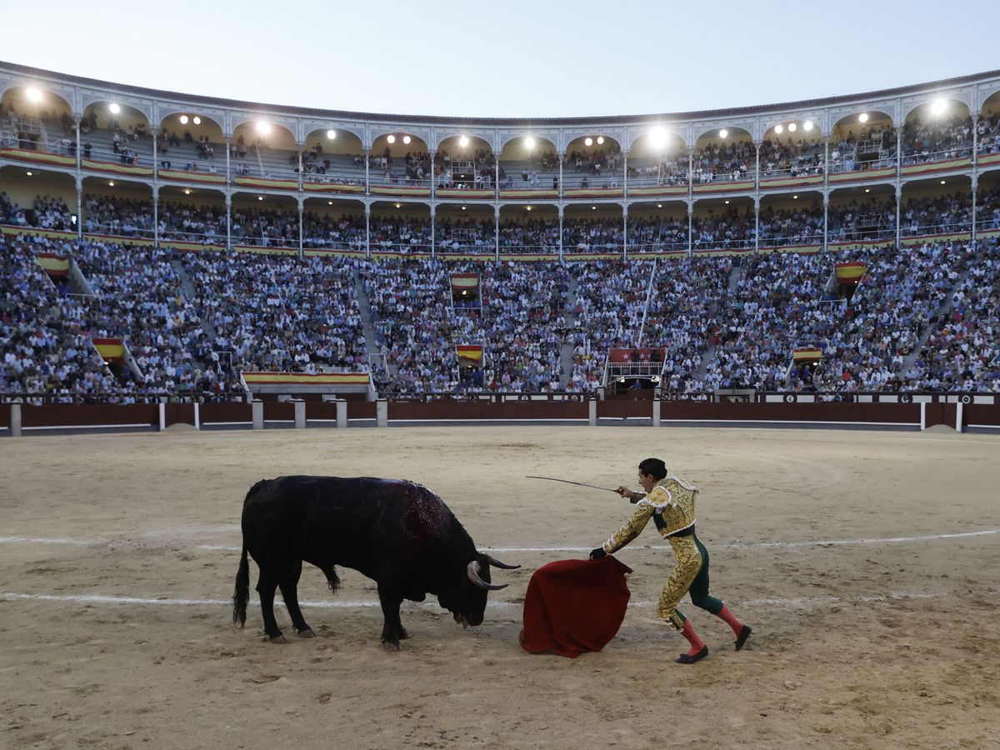
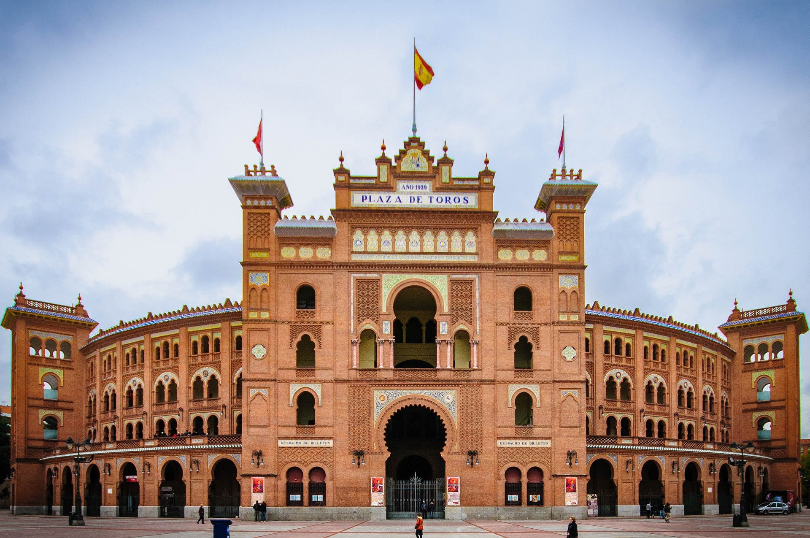

Мадрид

Пуерта дел Сол

Музей Прадо

Корида

Плаца Де Торос
Денят в Мадрид
Сутрин
- Посещение на Пуерта дел Сол
- Започнете с разходка около символичната площад "Пуерта дел Сол".
- Разгледайте търговските улици и се насладете на старинните архитектурни съкровища.
- Музей Прадо
- Отдайте се на изкуството в Музея Прадо.
- Разгледайте майсторските творби на Гойя, Веласкес и други.
Обяд
- Посетете Меркадо де Сан Мигел
- Съберете сили за следващите изживявания, наслаждавайки се на тапас и местни вкусове.
Следобед
- Екскурзия до Кралския Дворец
- Посетете Кралския Дворец и прекарайте време в прекрасните му градини.
- Стадион Сантяго Бернабеу
- Ако сте футболен ентусиаст, не пропускайте Стадиона Сантяго Бернабеу, дом на Реал Мадрид.
Вечер
- Парк Ретиро
- Завършете деня в Парк Ретиро.
- Покачете се по езерото, разходете се из мостовете и се отпуснете в този природен рай в града.
- Корида на Плаза де Торос
- Завършете деня със страстната емоция от корида на Плаза де Торос, където сила и изкуство се сливат.
Този пътеводител ще ви помогне да изживеете най-доброто от Мадрид, от обичани музеи и стадиони до заредените с енергия площади и изкуството на коридата.